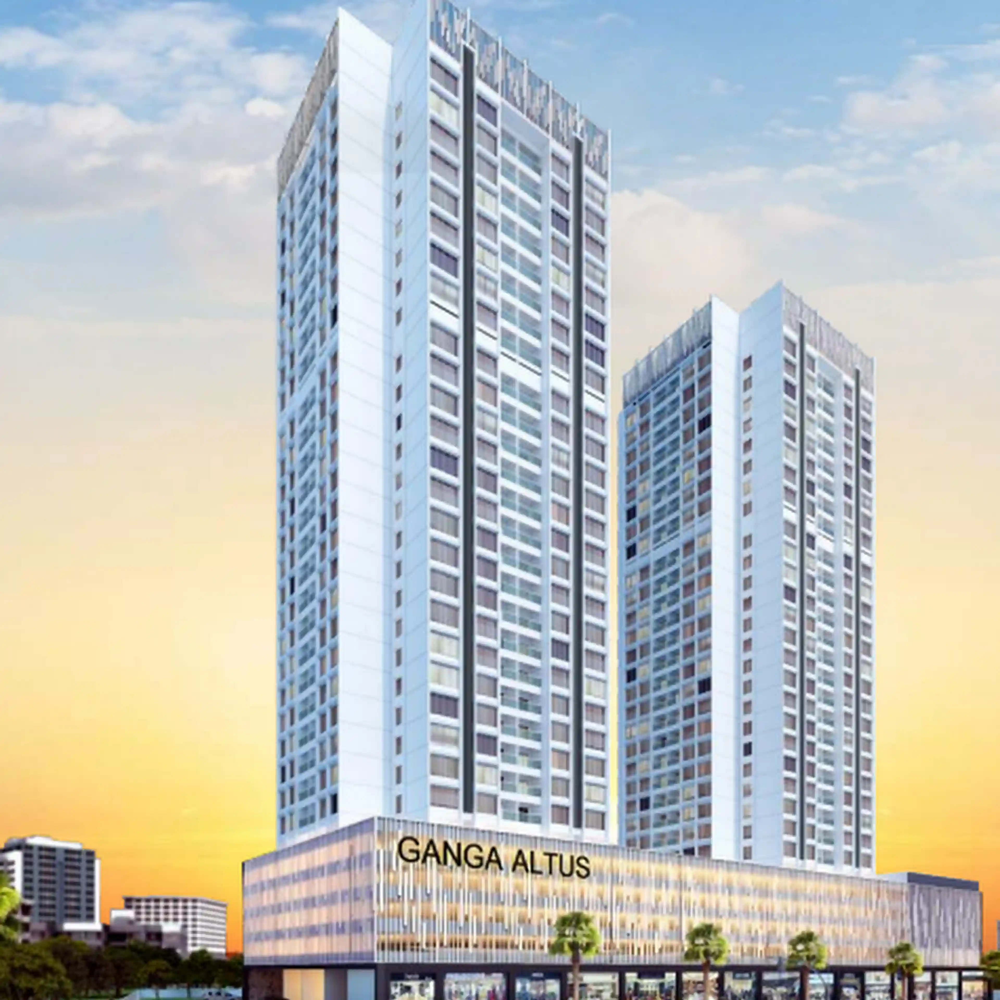

Know Your Candidates - Towards a Transparent Society Governance
Candidates
Sandesh Garud - D1001
Ambar Srivastava - D606
Nilesh Shete - D2301
Mahesh Gadekar - D1105
Karthik Natrajan - D306
Amol Shivale - D1207
Vaibhav Shinde - D308
Arvind Haswani - D502
Akshit Khade - D408
Raghav Bakshee - D106
Sultan Khan - D207
MUST READ
Rumours VS Reality
Select a Candidate
Click a name from the left panel to view details.